烏魯木齊開心玩
收到了補給品包裹，但還要等今天才寄出的太陽眼鏡，DHL不送烏魯木齊，物品要從西安再轉送，很麻煩也很費時。
但是沒有太陽眼鏡騎車真是很不方便，一直長時間暴露在強光和紫外線底下，還沒到巴黎可能就先瞎掉了。
為了等太陽眼鏡的到來，在烏魯木齊停留的時間可能會有五～六天之久，可以不間斷的玩很多天。
早上喝著樓下牛奶媽媽賣的兩包巧克力牛奶，要去那個背包要背在前面，小偷很猖狂的『國際大巴扎』。
既然人都還沒到，就已經聽說了小偷很多，那攜帶的東西就簡便一點吧，相機永遠拿在手上、現金不超過50元、筆和筆記本，出發！
從住的招待所散步走過去，大概是兩公里左右的距離，相當適合徒步旅行，所以就把小多留在房間裡。
會選擇騎自行車旅行，除了環保之外，也有省錢的強烈誘因，第一不需要車錢、第二不需要油錢。
光是省下這兩筆開銷，就可以讓我一路省著多玩好幾天～
自行車的移動速度也還算適中，在路上的時候可以看風景，到市區的話則能接近人文，但還是比不上走路那樣的便利。

穿著一身破爛的我，看到烏魯木齊的人都很光鮮亮麗，女生很會打扮，每一個看起來都像是背影殺手。
因為血統和種族的關係，很多不只是背影很殺，連正面都驚為天人，可惜很多漂亮的都用絲巾把臉包起來了。

在這邊拿出相機拍照的時候要小心，不要一拿出來就對著別人猛拍，有些種族不喜歡被拍照，會大聲怒斥你。
最好先示意性的舉著相機，用手指著相機，肢體語言詢問一下能不能拍照，OK的話再按下快門也不遲。

國際大巴扎就是超級貿易集散地，人行道被各式各樣的攤販給佔滿，吆喝的全是聽不懂的語言。
路上的行人各式各樣的穿著和打扮、形形色色的臉孔輪廓、充滿異國情調的食物和商品，來這邊請多帶一些一元的紙鈔。
吃的東西跟喝的飲料，幾乎全是一元就能搞定，不然就是五毛錢，只要不進入商店買紀念品的話，就算在這邊逛一整天，開銷也是極低。
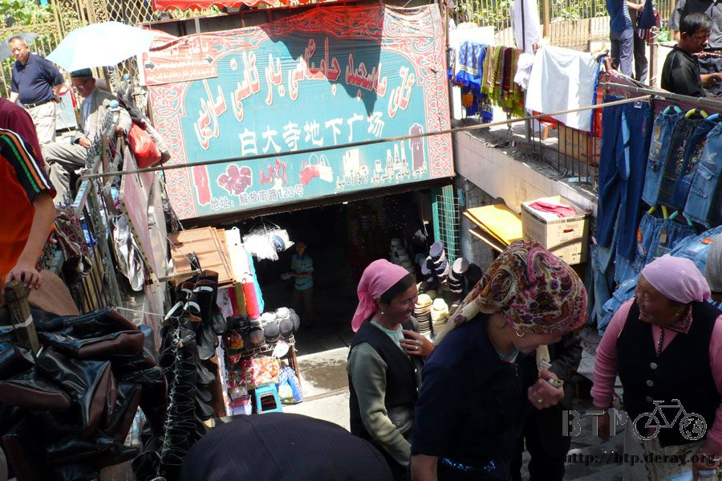
會在街邊就吆喝販售的，以一些布料、衣服為大宗，布料連小孩子都很會賣，把手上的布揮舞著向客人展示，然後就進入了討價還價的階段。
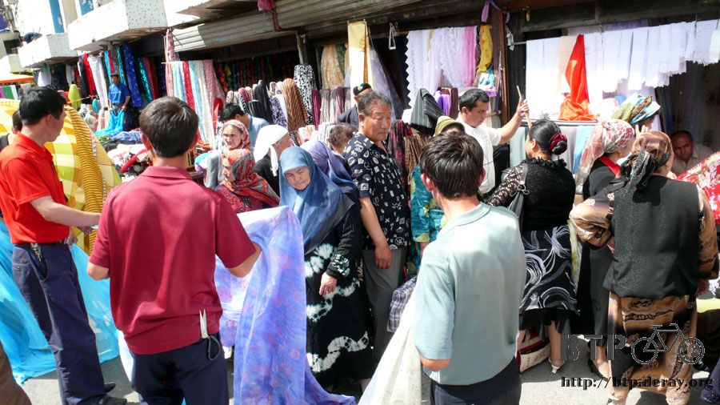
即使聽不懂對方的語言，但是那樣的肢體動作和談吐口氣都叫人深深著迷。
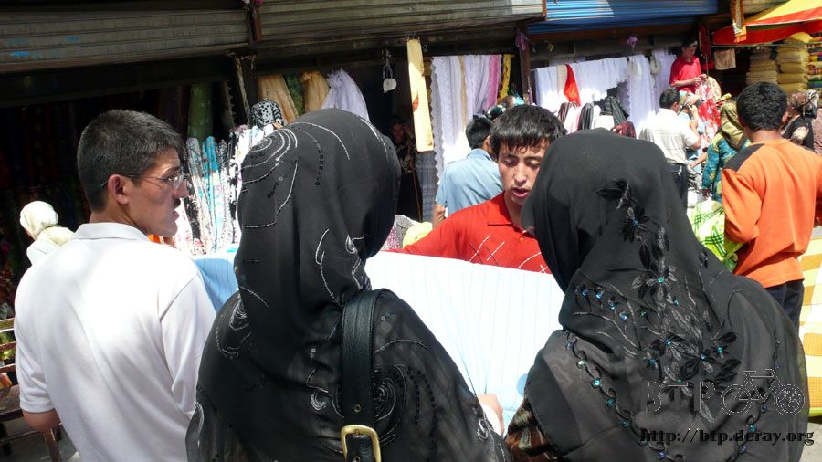
看著自己的穿著，有點想買幾件新衣服穿，可是衣服又很占空間，雖然售價都很便宜，二十元一件是這邊的公定價。
賣衣服的小販是不需要用架子來掛衣服的，全部的衣服都用衣架掛在雙手上，隨時可以向客人兜售。
因為手的長度有限，所以每個人賣的衣服數量都不多，一個一個的行動賣衣商人很有趣。

慢慢的往南走，各式各樣的商品看得我目不暇給，奇怪的人也很多，還有那種把蛇圍在脖子上走路的，嚇得我離他遠遠的繞過去。
頭上頂著大盤子賣東西的小販立刻引起了我的注意力，叫住了他等他拿下頭上的盤子，賣得是甜的炸麵包，
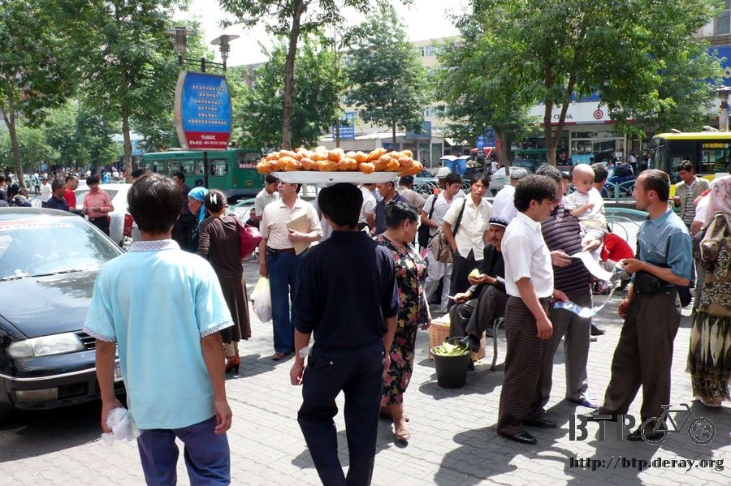
吃起來口感很像台灣賣的那種雙胞胎，灑了很多的砂糖，都是剛炸好拿出來兜售的，吃起來還是熱的，融化的砂糖和炸麵包很搭。
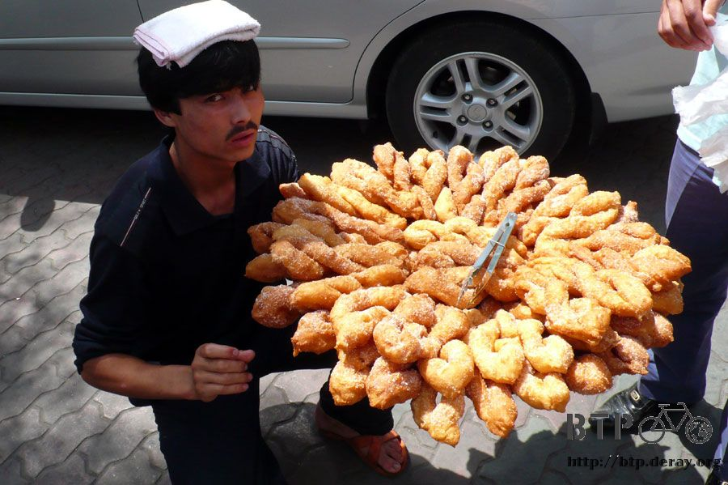
付錢的時候都不需要問多少錢，從口袋拿出一張一元，對方絕對不會跟你說不夠，有的還會找你五毛錢。
吃完炸麵包就想喝點飲料，看起來就很開心的噴射果汁，冰箱裡面放了一個馬達，將果汁射得高高的，想必是要吸引客人的注意。

它真的成功的吸引到我了~_~，像被催眠一樣的付了一塊錢，拿過一杯滿滿的黃色飲料，喝起來就是稀釋到淡的不能再淡的柳橙汁。
除了黃色的之外，也還有白色的，猜想應該是淡到不能再淡的牛奶口味，反正很便宜，就不要求太高。
掛著紅色布幔的商店街，在陽光的照射下裡面都泛著紅色的光芒，賣的大多是衣服，不是我的菜。

走著幾百公尺的街邊小販區，就到了二道橋大巴扎，大巴扎裡面就是一些像是百貨公司的攤位，
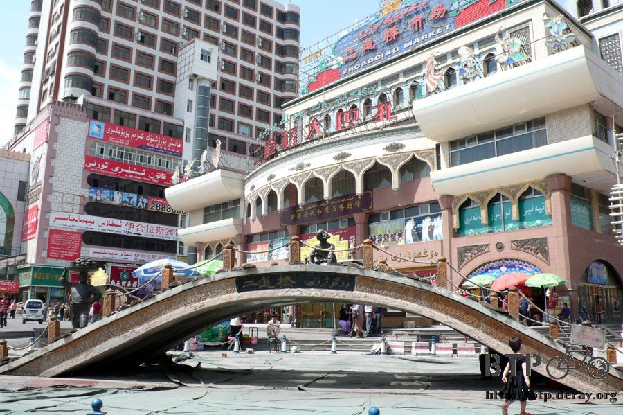
賣一些紀念品、和闐玉、冬蟲夏草、天山雪蓮和品牌衣物，所以我連走都沒走進去，裡面的吸引力和外頭的小販相比幾乎是零。
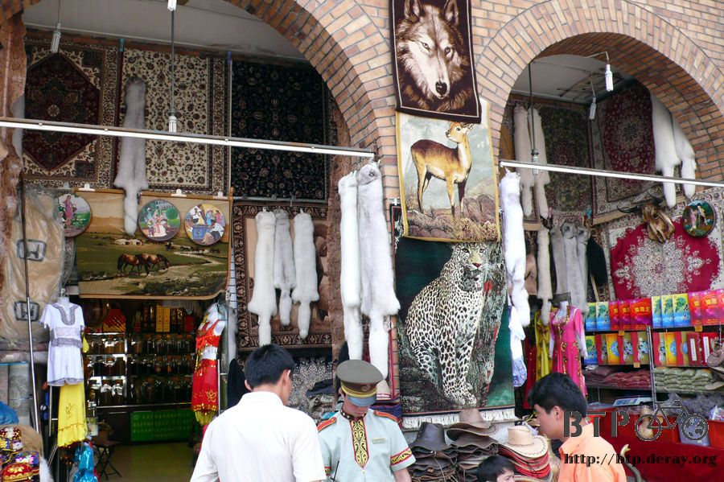
經過二道橋之後再往南走，就會到一個有著高聳圓塔的國際大巴扎廣場，週邊都是賣各式商品的店家。

每一個店面都很小，賣的東西則大同小異，手飾、項鍊、銀器、刀具、樂器、飾品，用看的就很享受，可是真的要買的話，請多比幾家再下手。
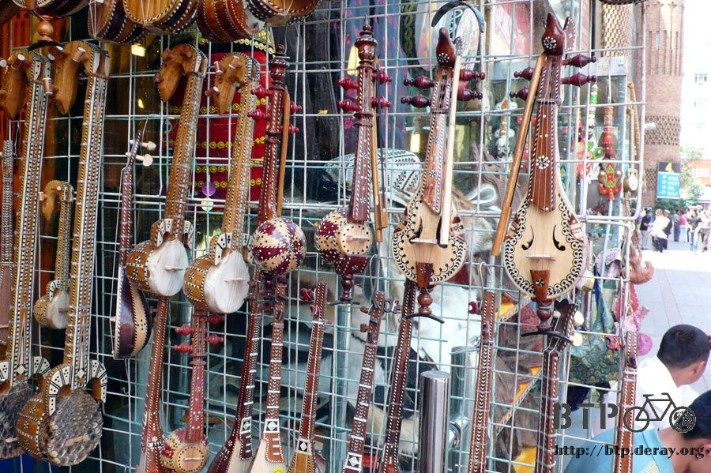
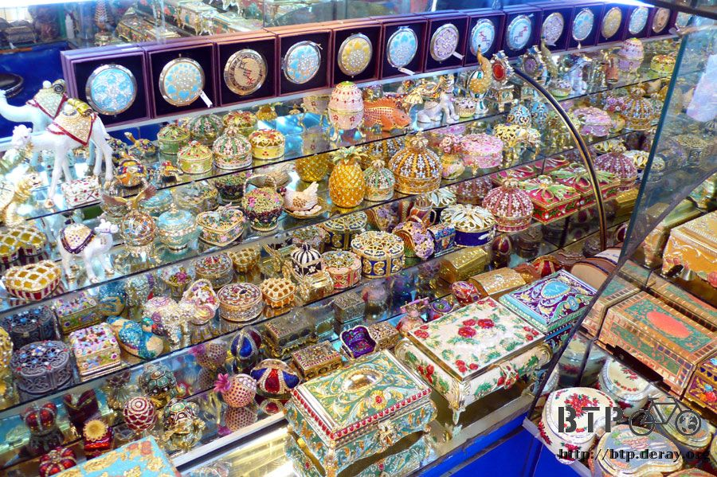
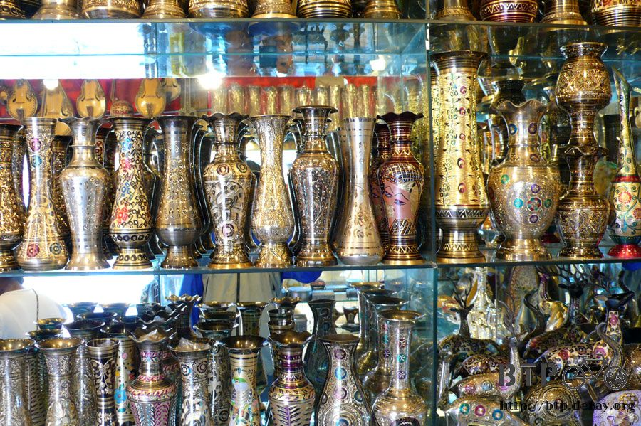

反正這一家賣的東西隔壁也有，而且商店開價都很唬爛，完全沒有公定價或是標價這種東西，都是依照你的樣子和打扮來報價。
我問了一個粉紅色的小珠寶盒要多少錢，裡面的女店員開價說八十五元，我就苦笑一下說太貴了，放回原位。
沒多久外頭的男店員也進來招呼我，問我『想要什麼？當交個朋友算我便宜一點，用進價賣給我。』
雖然是維族，但是中文說得真是超溜的，我又問了一下同樣一個珠寶盒要多少錢？
他想都沒想說『算你便宜，不賺你的錢，賣你一百二十元就好了。 』
我從剛剛的苦笑變成大笑，拜託一下，要騙客人麻煩自己人也先套好招，剛剛女店員跟我報價八十五元，你說算我便宜還變成一百二十元。
我笑得不能自己，用手摀著嘴巴，比了比女店員說『她的價錢比你還要像個朋友多了』。
然後就是兩個店員用我聽不懂的話開始交談起來，就算聽不懂也猜得出來在講啥米，八成為了報價出包的事情在吵架吧。
大圓塔底下有一圈的雕刻。，各種不同的民族風情在這都看的到。
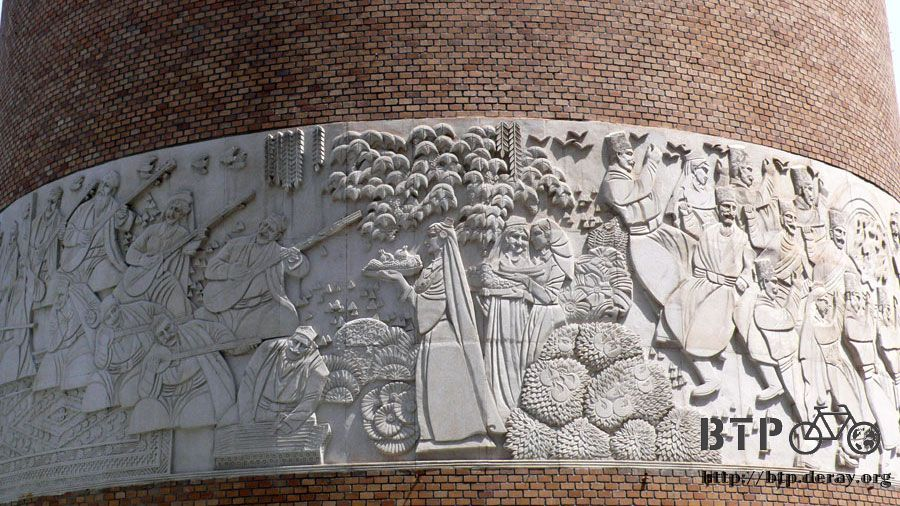
這邊也有賣一些比較不一樣的小吃，像是小山冰淇淋，用一個小紙杯裝，滿滿一杯白色的冰淇淋，是牛奶口味的。
吃一小口真是無比的美味，就連哈根大師也要甘拜下風，只是這個冰淇淋有點危險，好吃但是會拉肚子。
吃了五十天中國食物的我，鐵胃已經是世界級的品質保證，但還是掛在這一杯超好吃的冰淇淋上面。

連飄著蒼蠅浮屍的湯麵，我都能將蒼蠅撈起來，面不改色的吃完整碗麵，居然敗在一杯小小的冰淇淋。
好加在我外出一定都會帶一些衛生紙，趕緊找一間公廁，情急的時候就不管還要付三毛才能方便這種鳥規定。

有一些外表乾巴巴的果實，看起來一點都不好吃的樣子，但是切開之後裡面是血紅色的果實，做成果汁喝，不知道是什麼味道。
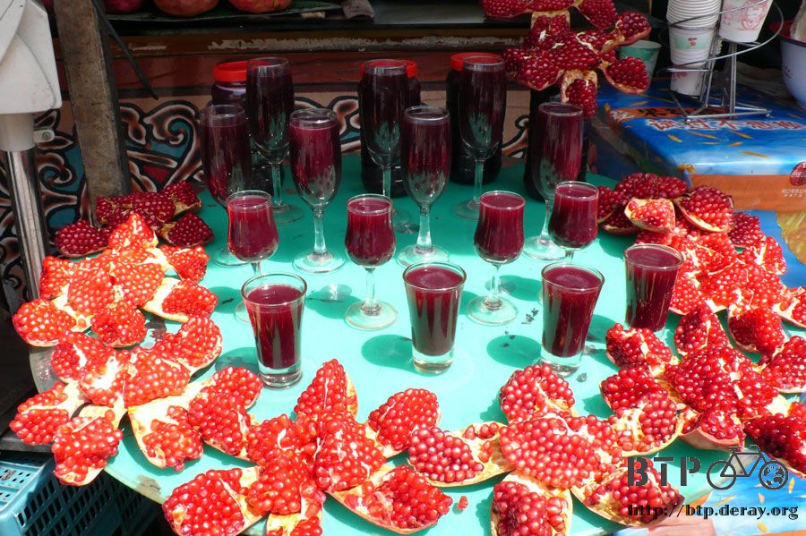
繞了大巴扎走了好大一圈，練習假裝自己不會說中文，該怎麼跟人家交涉，離開中國之後，語言就要變成新的考驗了。
中午在大巴扎的小巷子裡吃手抓飯，我才剛舉起相機，就被老闆生氣的唸了一段不知道什麼話，好加在我還沒拍照。
就跟老闆和善的說我要吃飯，來一份抓飯吧，他的臉色才轉回和悅。
手抓飯是淺黃色的，口感軟硬適中，放了吃不出來是什麼的紅色、黃色、綠色等鮮豔的蔬菜，再配上一大塊帶骨的羊肉。
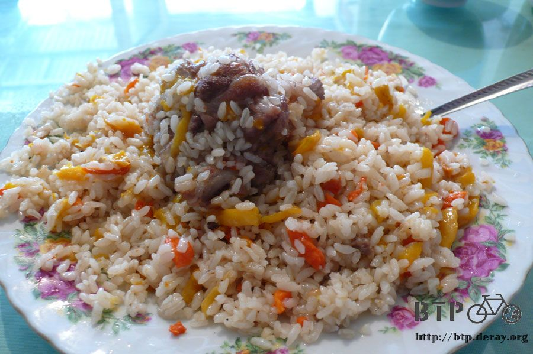
味道當然是很好吃，我發覺我形容食物都是用好吃、超好吃這樣沒什麼意義的形容詞，不能將美味傳達給你們真是一種遺憾。
有機會的話，請各位找一間回民餐廳去試試看吧，他們料理的手藝和口味真的是很讚，把漢餐都比下去了。
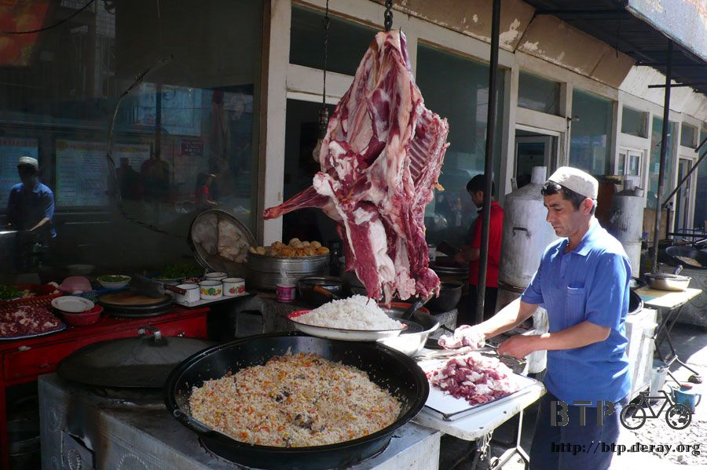
吃完午飯，拐個彎往金字塔那邊走，金字塔很小很小，後面是一個金碧輝煌的建築物，我還以為是博物館，結果是電影院。
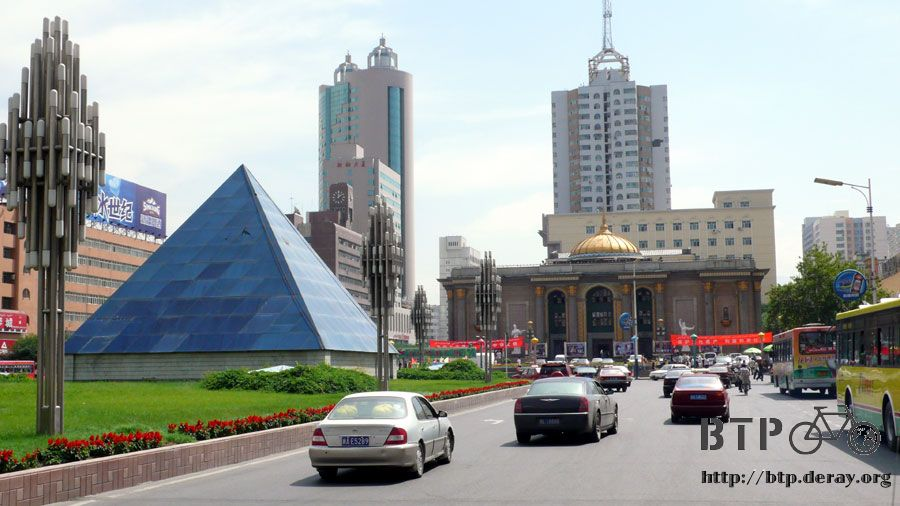
電影院的隔壁都是賣奶茶的店，各種口味都有，除了一般的牛奶之外，還有馬奶、駱駝奶，新疆口味、哈薩克口味。
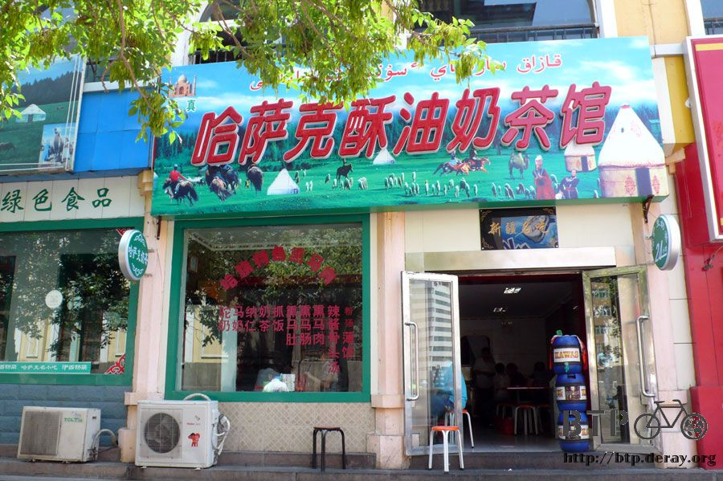
點餐的客人就坐在外頭的樹蔭下乘涼吃飯，我點了一杯奶茶，用超大的杯子裝給我，喝起來是滾燙的，
味道一點都不甜，奶味很重，但又不像在喝熱牛奶，還有凝固的不明物質，略帶著微微的鹹味，說不出是好喝還是難喝。

電影院的隔壁就是一間接著一間的音像行，賣的就是音樂、電影等商品，關於版權的問題，就不需要我再講黑色笑話了XD
兜了一個圈子回旅館，一整個早上就在大巴扎消磨完了，稍微休息一下，下午的目標是紅山公園。
正午的太陽很曬人，在房間待到下午五點才繼續出去玩，出發前順便多付了四個晚上的住宿費用，希望這幾天都沒有人跟我共享房間。
往紅山公園大概也是兩公里的距離，只是要改往北走，因為道路是棋盤狀規劃的，要迷路還蠻不容易，出發前只要看一下該怎麼走就沒問題。
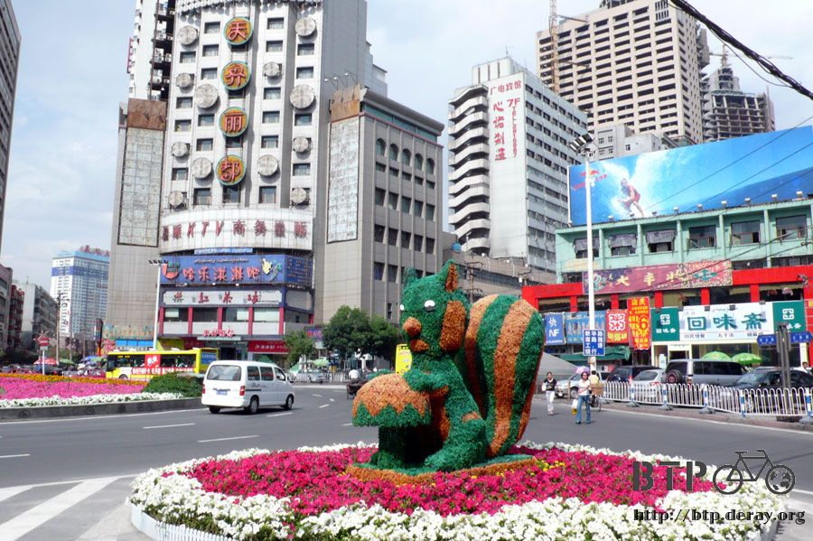
因為要在烏魯木齊待那麼多天，所以接下來的天池、南山牧場，這些地方都會去遊玩，花費想必便宜不到哪裡去，
所以拿著提款卡想順便領錢，結果試了幾台都沒有國際提款的功能，反而不知道怎麼搞得，回旅館之後居然發現提款卡弄丟了！
這下可有趣了~_~接下來要過窮人的生活了，我在國外要怎麼補申請我的提款卡呀。
撇開悲慘的事情不講，下午的行程也是很開心，紅山公園雖然只是一座公園，但居然是國家評比四個A級的旅遊景點。

更好的是，進去裡面玩是完全免費的，只有一些沒什麼人會去參觀的廟才需要五元或是十元的門票。
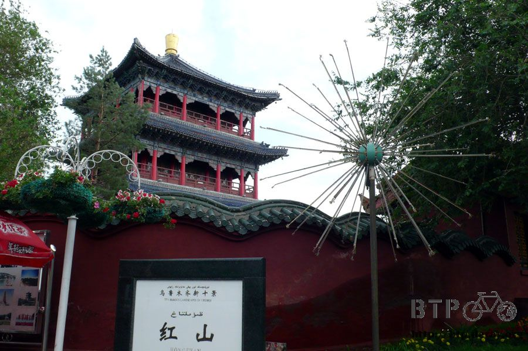
紅山公園分為南北兩個入口，我進去的地方是北門，沿著緩緩上升的坡道走上爬。山頂比市區還要高兩百公尺。


裡面有很多的遊戲小攤販，射氣球、撈魚、鬼屋、釣魚、汽船...實在太多了。


這是紅山瀑布，水流很小很小，很多家長都會把小孩放在這邊玩，然後小孩就會在這邊尿尿。
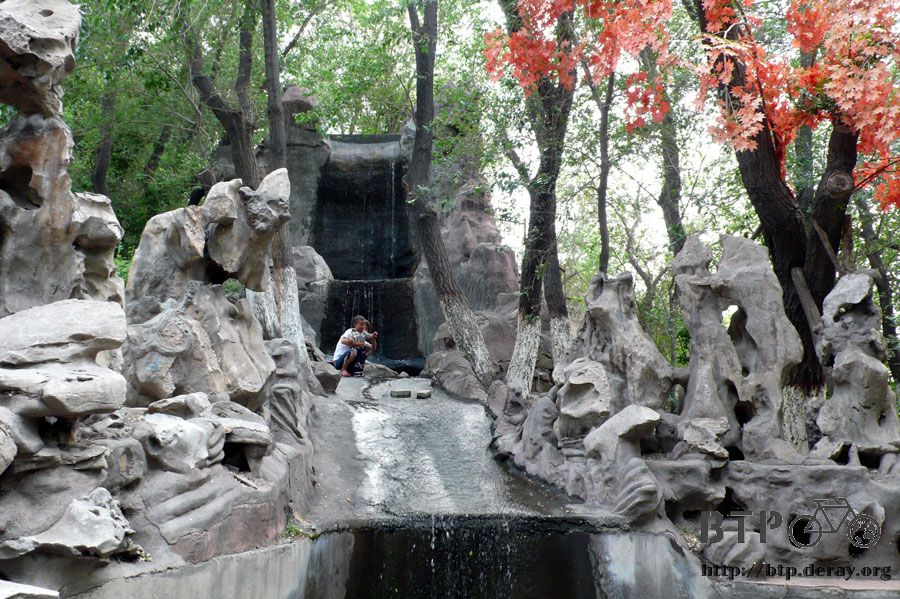
不用怕到這邊會無聊，就算對玩的東西沒興趣，好吃的食物也是一個接一個，而且裡面的景色很漂亮，很多人在這邊郊遊午餐。
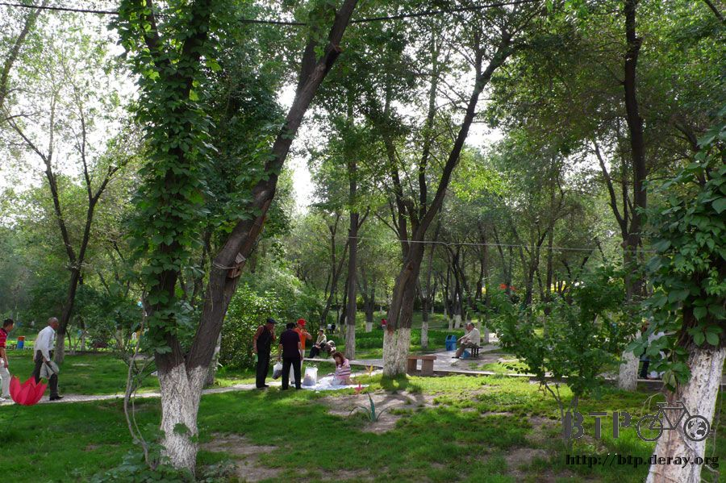
在草地上鋪一塊布就可以享受一家人的歡樂時光，更甚者還有在公園裡搭帳篷露營的人。
裡面有賣手工搥打的花生糕，兩個人用大錘子將花生糕打的扁扁的，然後再反覆摺疊成小方塊，所以口感是一層一層很酥脆。

看他們打得那麼賣力，就買一個來嚐嚐看味道怎麼樣？不會太甜也不會黏牙，熱的時候吃軟軟的，照店員說的放涼了之後再吃，就變得很酥脆。
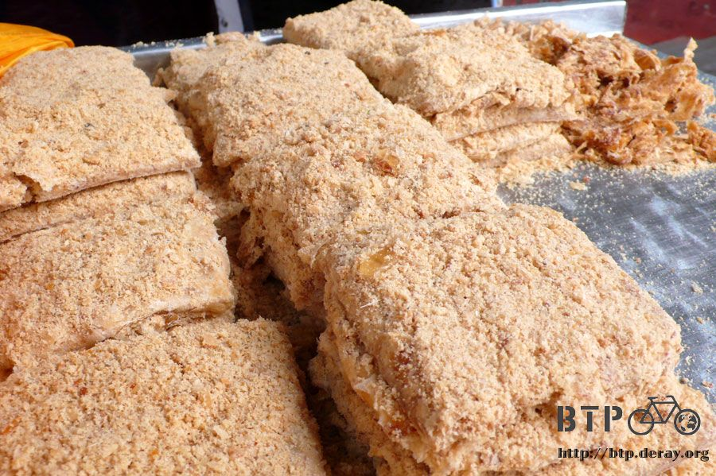
這裡有幾間廟，我都沒進去參觀，在門口拍張照片就好了，意外拍到一個小朋友，中國的小朋友穿的褲子，屁股的部分都是開花的。
這樣大小便的時候方便很多，不用弄髒褲子，媽媽就不用整天洗褲子兼打小孩，我把花生糕扳一塊分小孩吃。

因應北京奧運就要在2008年舉辦了，所以紅山公園裡佈置的是奧運風格，將歷年以來的所有奧運圖案和簡介都作成一個一個的展示。
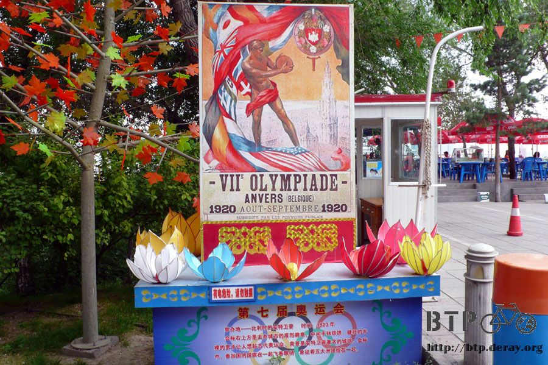
配上可愛的花燈造景和本來就已經很綠意盎然的公園，還蠻合的來的。
我很喜歡拍人家在合照的樣子，有一種幕後花絮的感覺，仔細看，每一個都是正妹喔！背景是花燈，很多花燈人在進行奧運的項目。
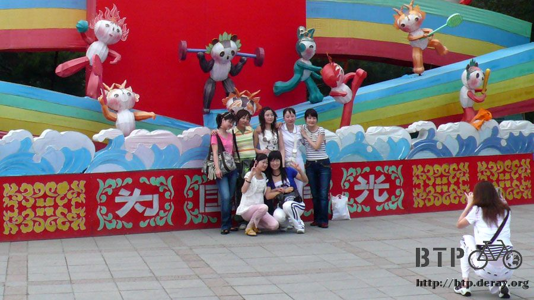
烏魯木齊的海拔不高，只有大概七百公尺，所以紅山公園頂端的九百公尺，就可以鳥瞰整個烏魯木齊市。

紅山公園顧名思義就是山是紅色的，是一座層次非常明顯的紅色岩石斷崖，幾千年前就已經在這裡修築寺廟。

讓到烏魯木齊的人可以有地方鳥瞰這美麗的景色，以前經過這邊都是要下馬行叩拜之禮表示尊敬的呢。
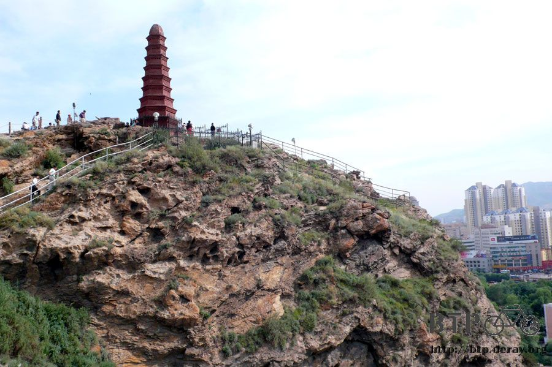
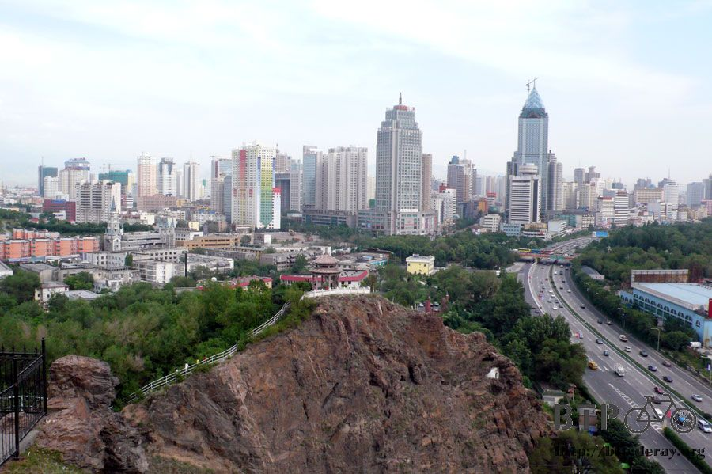
旁邊的鐵欄杆上繫上了數不清的各式小鎖，想必是有什麼樣的意義，是情人百年好合還是事事心想事成呢？
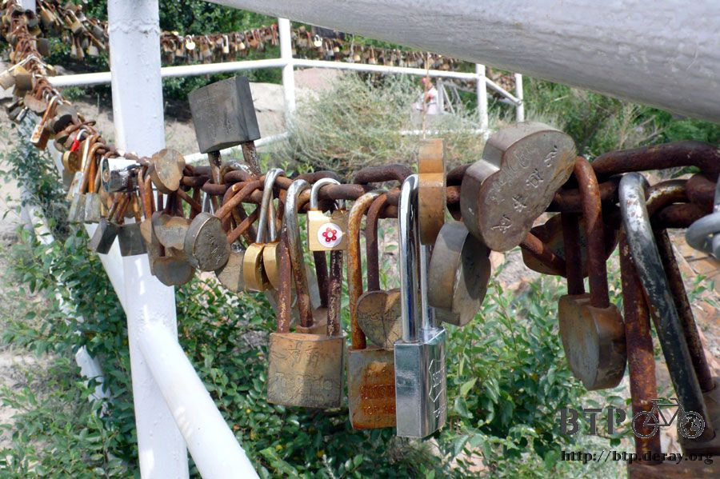
在這邊又遇到剛剛那個褲子開開的小孩，還有帶著他來公園玩的爺爺跟奶奶，幫他們拍一張大合照，可惜我沒辦法將照片寄給你們。
但如果你們可以上網的話，也是能看到這張照片的唷 :D
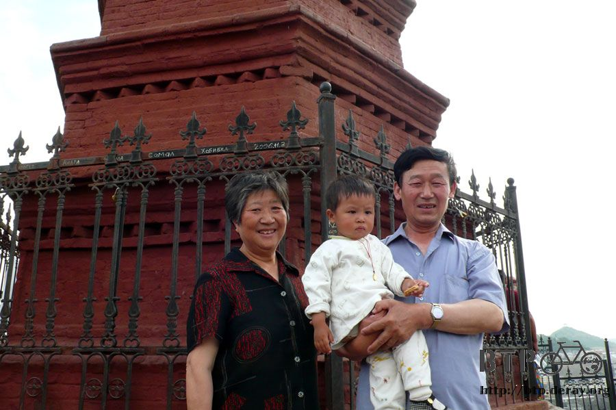
這邊還有林則徐的石像，眾所皆知他是中國反毒的大功臣，這邊也有一個禁毒銅鼎。
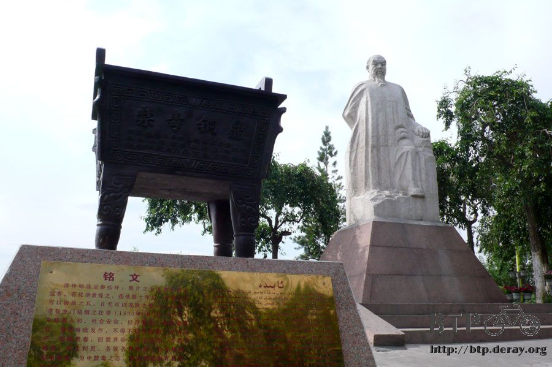
紅山公園的口號是『不到新疆不知西域風采，不登紅山不知烏魯木齊妝容。』
如果烏魯木齊是新疆人的驕傲，那紅山公園就是烏魯木齊人的得意了，

從山頂可以鳥瞰整個市區，大樓一棟比一棟還高，蓋的也都很漂亮，不是死板的水泥建築，讓這座城市更添風采。
每個進入公園的人都會走到山頂，這裡隨時都是人滿為患，但環境維持的超好！
地上連一張紙屑都沒有，以一個不收票的公園來說，這樣的水準令人敬佩。
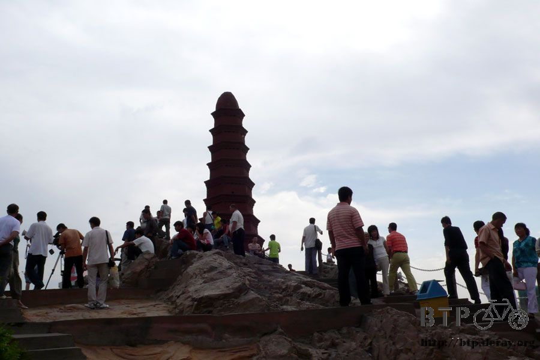
下午六點多，自動灑水系統就會開始灌溉整個公園的草地，水花會飛濺到小路上，穿著短褲的我雙腳就一陣清涼。

從北門進入，登上山頂之後往南走，改從南門出去，換個角度看這邊的一座廟宇，真的很有國際級觀光景點的感覺。
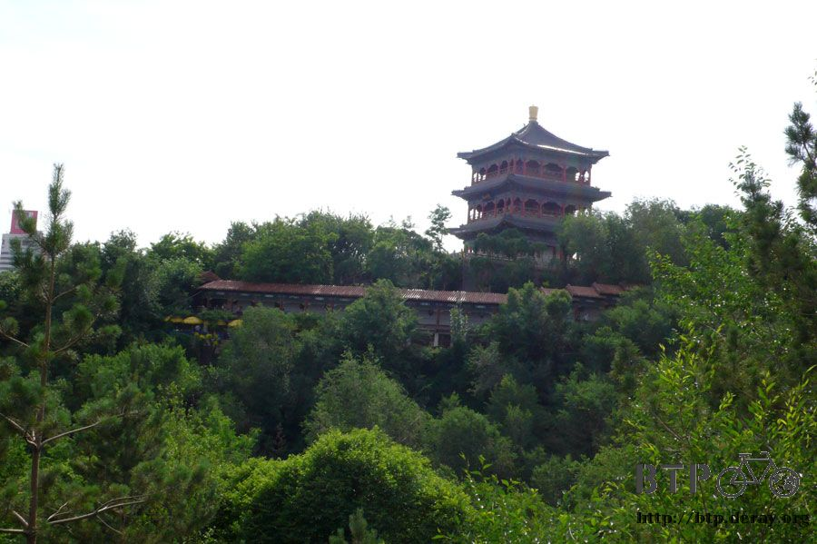
從北門進來都是斜坡，往南門下去則都是階梯，很多練體育的學生都在這邊練習單腳跳階梯，動作很靈活，我本來想看會不會有人摔倒，但是我失望了。

南門這邊還有一個聊齋館，就跟台灣的遊樂區大多會有鬼屋一樣，進去要門票，我不想晚上睡覺做噩夢，所以還是算了orz

北門進，南門出，把紅山公園整個走了一圈。
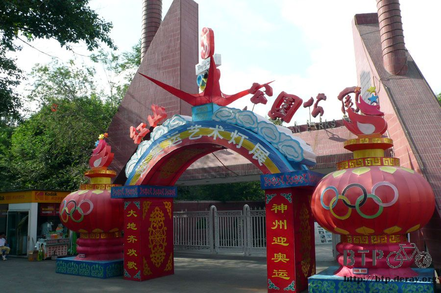
離開公園後就散步回去，換一條路走，結果整條路都在施工，兩旁的店家生意苦哈哈，全部貼出了『道路施工，全店清售』的海報。
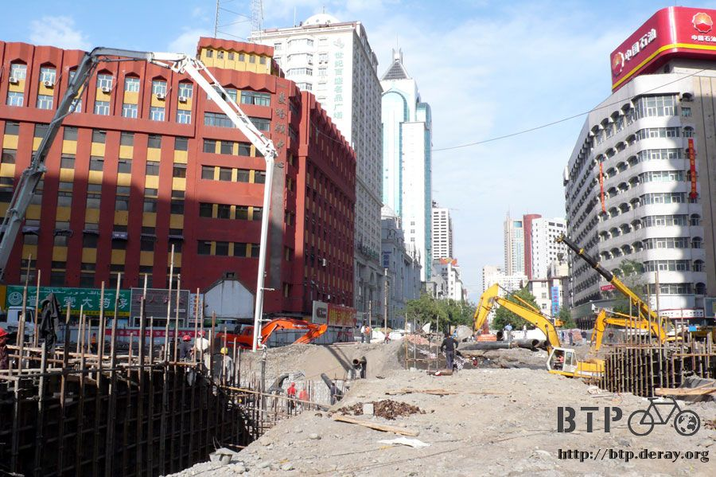
回到招待所之後，在樓下的奇怪鹽酥雞攤販(到現在還不知道我吃得這個到底是什麼)買了一些蔬菜炸串，豆子、花椰菜、金針菇、茄子等等。

配上一瓶冰涼的可樂就是我的晚餐了，回到房間正開心今天是這樣的充實又盡興，準備大快朵頤的時候。
翻著外套的口袋，就被自己弄丟提款卡的事情給重重打擊，看著手中的這瓶可樂，在旅費的問題解決之前，
將來都只能喝不用錢的開水了，慢慢的喝光最後一瓶可樂，我會想念這冰涼帶勁的味道T_T
繼續閱讀：6.12 再窮也要玩
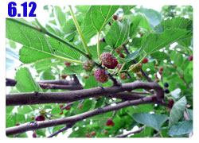
中國-人民幣－ 1：4.3 台幣
6.11 |
總計：46.3元 |
早餐牛奶兩包2元、冰棒0.5元、果汁0.5元、冰淇淋2元、新疆雙胞胎1元、午餐手抓飯6元、公廁0.3元、哈薩克奶茶2元、花生糕4元、住店20元、晚餐炸蔬菜串5元、可樂3元 |
|